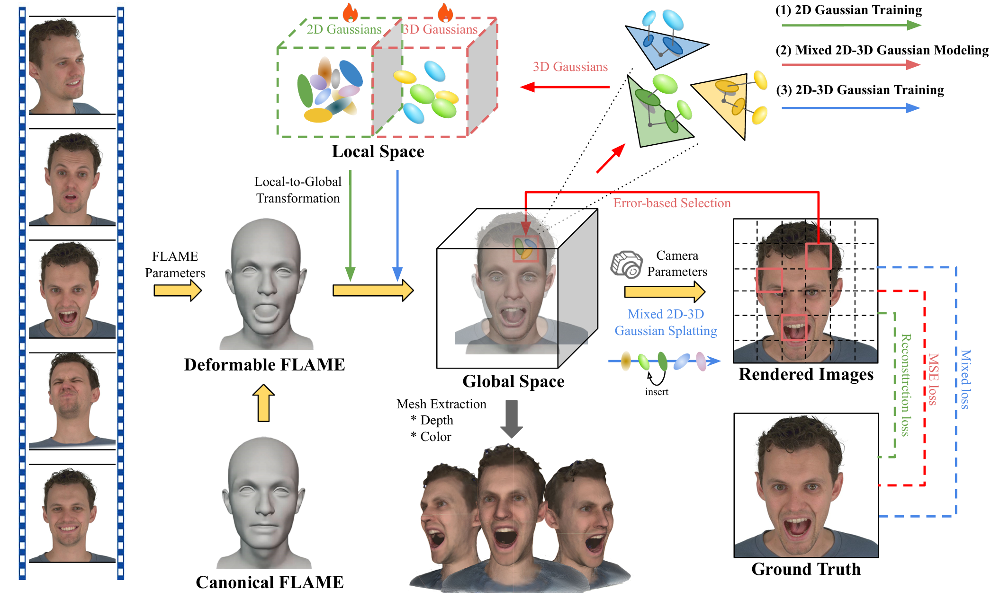
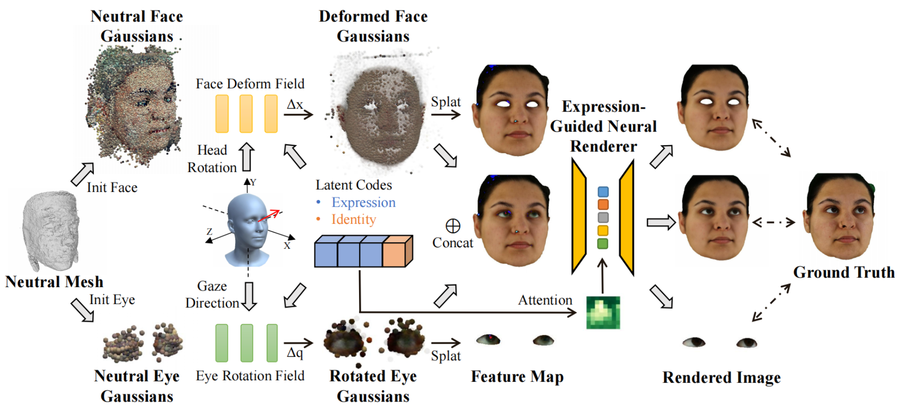
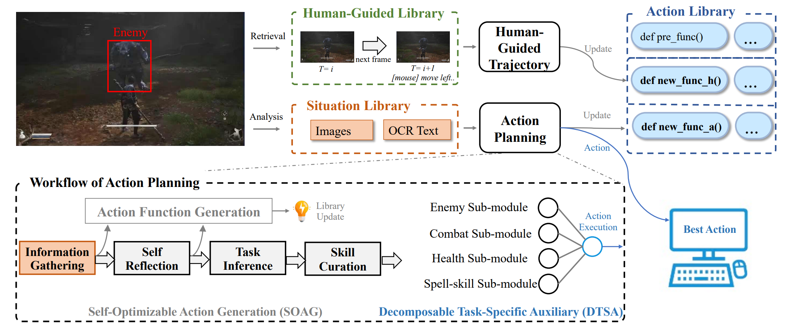
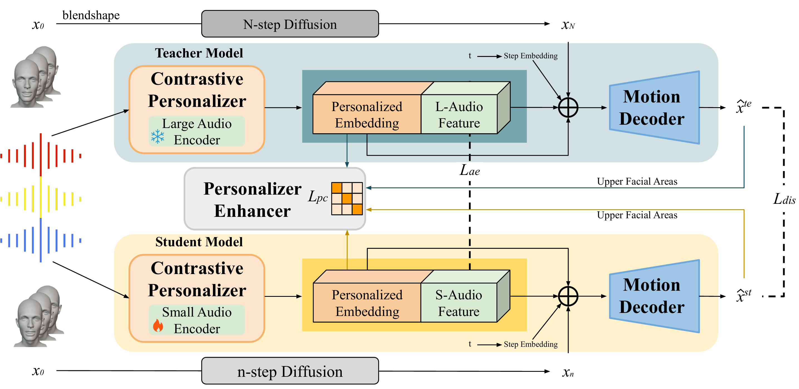

|
Peng Chen
I am a second-year master student at
Institute of Software, Chinese Academy of Sciences,
supervised by Prof. Hui Chen from ISCAS
and Ming Lu from Intel Labs China.
I received my B.S. in Computer Science from University of Science and Technology, Beijing in 2023 and obtained Beijing Distinguished Graduate Award and Beijing Outstanding Graduation Thesis.
I serve as a reviewer for international conferences including ICLR and ISMAR.
I am seeking a PhD opportunity closely aligned with my research interests.
My research focuses on 3D Vision, AIGC, and VLM, involving technologies like 3DGS, Diffusion, LLaVA, and their derivatives, with applications in digital humans, image generation, and image/video understanding.
Email /
Github /
Google Scholar
|
|
|

|
[arXiv preprint, 2024]
MixedGaussianAvatar: Realistically and Geometrically Accurate Head Avatar via Mixed 2D-3D Gaussians
Peng Chen,
Xiaobao Wei,
Qingpo Wuwu,
Xinyi Wang,
Xingyu Xiao,
Ming Lu
Paper
/
Project
/
Code
We use 2DGS to maintain the surface geometry and employ 3DGS for color correction in areas where the rendering quality of 2DGS is insufficient, reconstructing a realistically and geometrically accurate 3D head avatar.
|
|

|
[arXiv preprint, 2024]
GazeGaussian: High-Fidelity Gaze Redirection with 3D Gaussian Splatting
Xiaobao Wei,
Peng Chen,
Guangyu Li,
Ming Lu,
Hui Chen,
Feng Tian
Paper
/
Project
/
Code
We propose GazeGaussian, a high-fidelity gaze redirection method that uses a two-stream 3DGS model to represent the face and eye regions separately.
|
|

|
[NeurIPS Workshop, 2024]
Can VLMs Play Action Role-Playing Games? Take Black Myth Wukong as a Study Case
Peng Chen*,
Pi Bu*,
Jun Song,
Yuan Gao,
Bo Zheng
Paper
/
Project
We propose a novel framework named the VARP agent, which directly takes game screenshots as input and generates keyboard and mouse operations to play the ARPG.
|
|

|
[arXiv preprint, 2023]
DiffusionTalker: Personalization and Acceleration for Speech-Driven 3D Face Diffuser
Peng Chen*,
Xiaobao Wei*,
Ming Lu,
Yitong Zhu,
Naiming Yao,
Xingyu Xiao,
Hui Chen
Paper
/
Project
/
Code
We propose DiffusionTalker, a diffusion-based method that utilizes contrastive learning to personalize 3D facial animation and knowledge distillation to accelerate 3D animation generation.
|
|
|
[IEEE VR, 2024]
Bring Your Own Character: A Holistic Solution for Automatic Facial Animation Generation of Customized Characters
Zechen Bai,
Peng Chen,
Xiaolan Peng,
Lu Liu,
Naiming Yao,
Hui Chen,
Feng Tian
Paper
/
Code
Given a target facial video as reference, bring your own character into our solution integrated with Unity3D, it automatically generates facial animation for the virtual character.
|
-
[04/2024 - 09/2024] Alibaba, Taotian
Research Intern for MLLM and Agent, with research work including vision-based MLLM agents and fine-tuning as well as improvements to LLaVA.
-
[11/2023 - 04/2024] AMD, Xilinx AI
Research Intern for Diffusion-based AIGC, especially focused on improving ControlNet and Stable Diffusion for image generation.
-
[07/2023 - 08/2023] Baidu, ACG
Research Intern for Wenxin LLM Evaluation.
-
[06/2023] Beijing Outstanding Graduation Design (Thesis), 2023.
-
[06/2023] Beijing Distinguished Graduate Award, 2023.
|
Miscellaneous
|
Friends (click to expand, random order)
|
|
{kind=link}